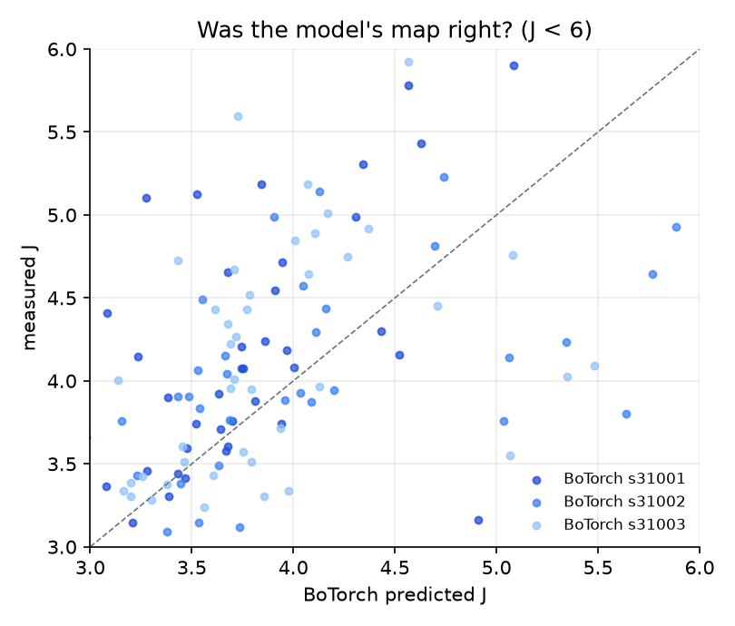
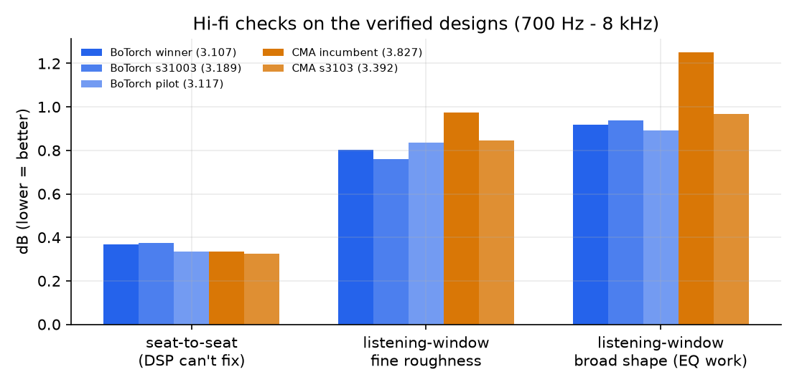
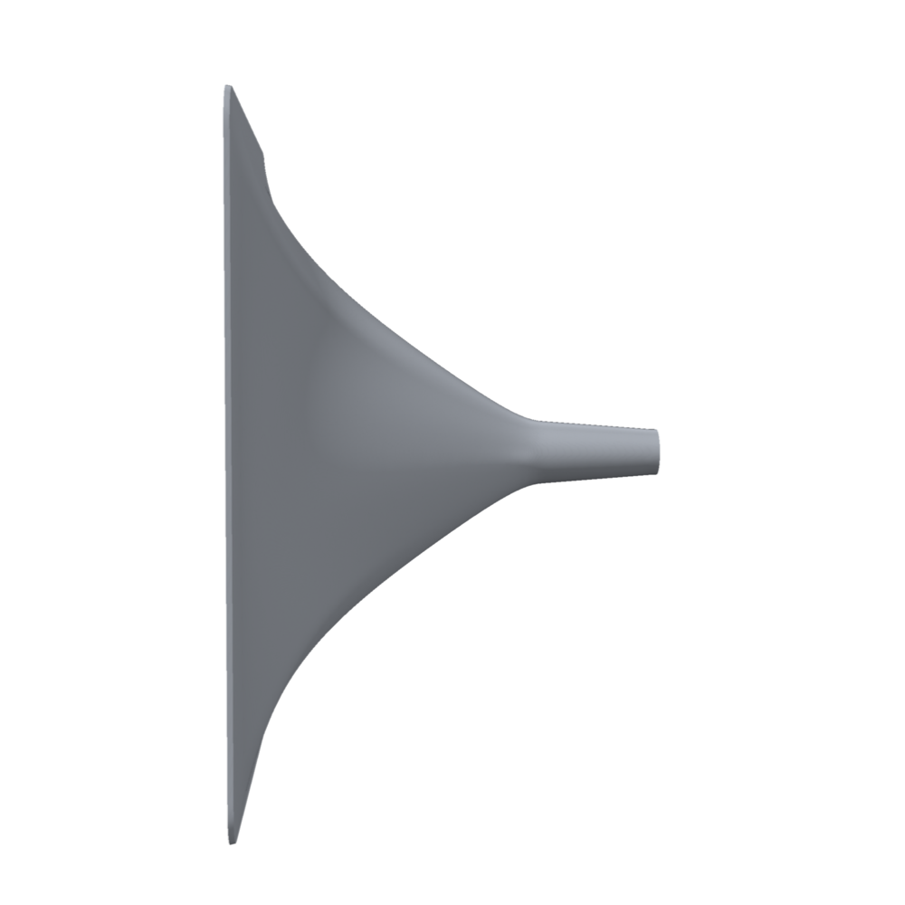
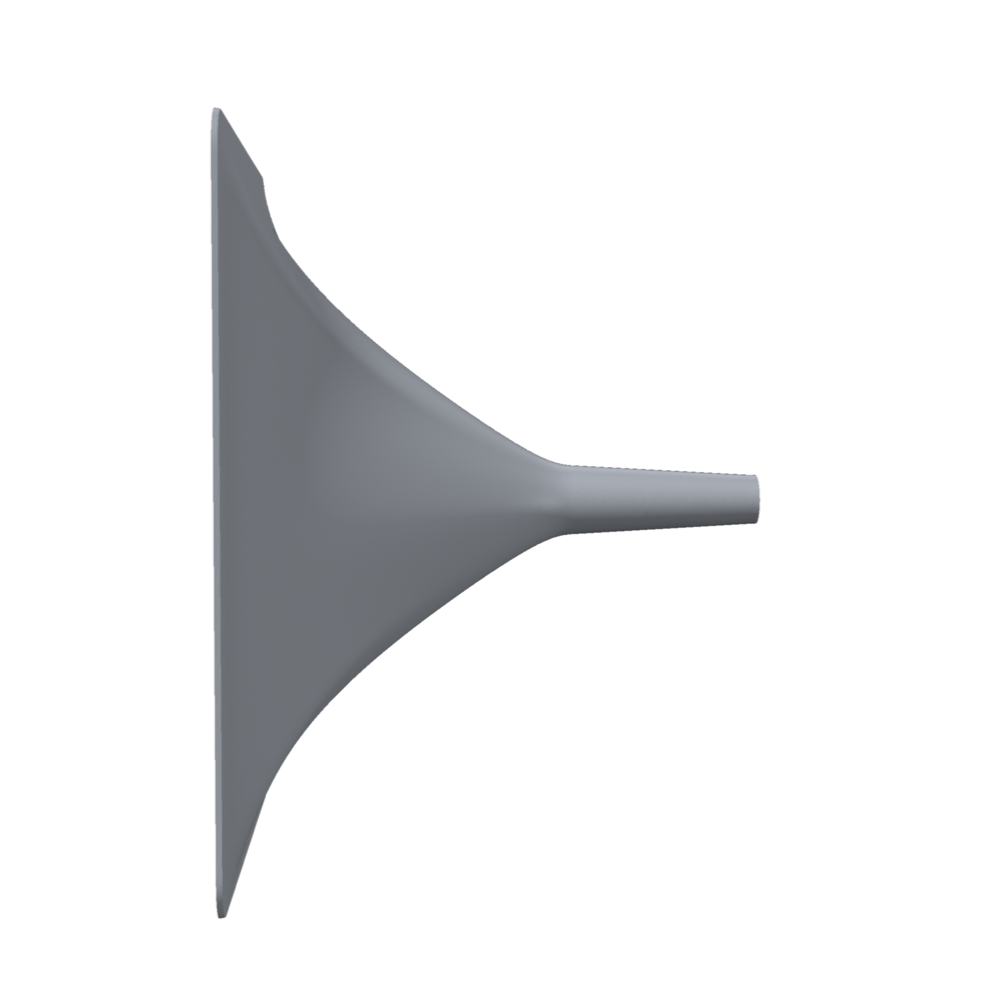

BoTorch vs CMA-ES on the home horn
HornLab search · 15 Nov 2026 · OSSE extended-throat home horn, brief
room_80x60_700_hf1440_v7 (objective v7; lower J is better)How the test was set up
- Same starting knowledge for both methods: 185 solved designs from an earlier CMA run (best J 3.2328). BoTorch learns from all of them; CMA starts from the best one.
- Equal budget: 60 new screen solves + 6 verify solves per arm, 3 seeds per method, same GPU, solver pin and brief.
- Rule fixed before the run: compare the median verify J (the finer solve); the gap must exceed both methods' seed spread.
- BoTorch: Gaussian-process model (Matérn 5/2, per-knob length scales) + qLogNoisyExpectedImprovement over a 4096-design candidate pool that is pre-checked for size. CMA-ES: σ0 0.15 from the prior best.
Best score so far, per new solve
Do the scores hold up when re-solved finer?
Points above the dashed line got worse at verify. CMA's best design (the starting incumbent) goes from 3.23 to 3.83; BoTorch's winners stay close to their screen score. Hollow rings are the 14 Nov BoTorch pilot.
Every arm
What BoTorch found: a different horn
All three BoTorch arms, and CMA arm 3's best verified design, moved to a shorter, steeper throat extension (about 110–127 mm at 4.3–4.8°, against 172 mm at 3.2°). The two methods independently found the same region. Coverage is similar, about 66 × 68–71°.
Deeper analysis (offline, no new solves)
0.68–0.83rank agreement, BoTorch predicted vs measured (per arm; its 95 % intervals are too wide to be informative)
+3.4 % vs +9.4 %median score drift at verify, BoTorch vs CMA
0.92 vs 1.25 dBlistening-window broad shape (EQ work), winner vs incumbent
0.37 vs 0.33 dBseat-to-seat spread (a tie, inaudible)

Predictions reconstructed by refitting the same locked model on the data available before each pick (the study did not log them). The ranking is good and the error near the best designs is 0.2–0.4 J, but the 95 % intervals are very wide (median ≈ 4.6 J), so they are not a useful confidence measure.

Seat-to-seat consistency is a tie. BoTorch's horn has the smoother listening window, so the J win doesn't trade away hi-fi behaviour.

BoTorch winner · verify 3.107 · throat ext 114 mm @ 4.3°

CMA incumbent · verify 3.827 · throat ext 172 mm @ 3.2°
Caveats
- Warm start from an already-optimized horn. The shared prior was a finished 200-design CMA run, and its best design (J 3.2328) is where two independent CMA seeds had already converged. CMA restarted there with a small step, so it had little room left in that basin; BoTorch's global model could jump to a different basin. This tests “which method improves an already-optimized design?”, not “which searches better from scratch”; a cold-start comparison is still to do.
- One task, one objective (v7), 3 seeds per method, warm-started from CMA data. A cold start was not tested.
- CMA spent 14–29 of its 60 solves on designs refused as too large. BoTorch pre-checks size and lost 0–3.
- A BoTorch step takes about 73 s against about 55 s for CMA, because of the model refit. The comparison counts solves, not wall time.
- Next: the TuRBO (trust-region) and Pareto (coverage × ripple) BoTorch modes, tested the same way.
Data: data.json · run ids per arm in the table above.